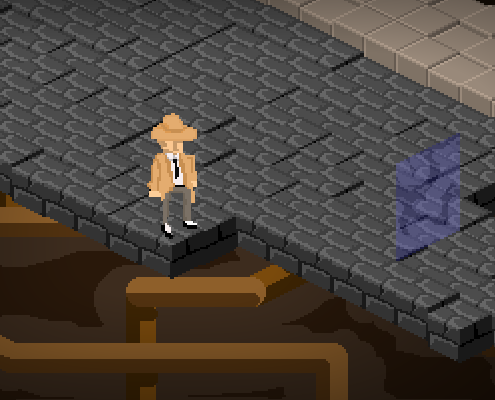
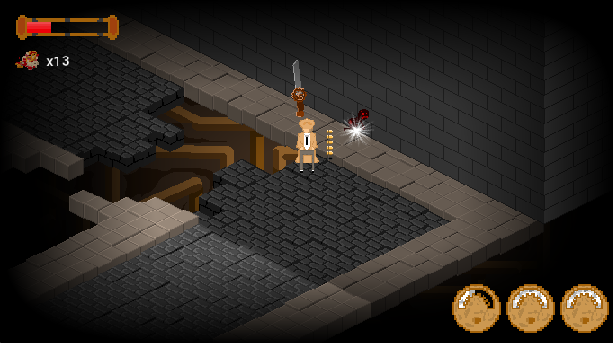
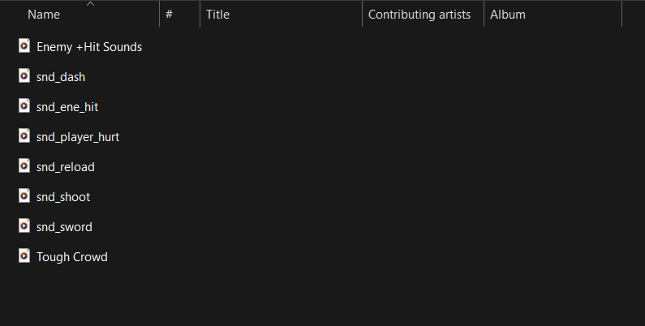
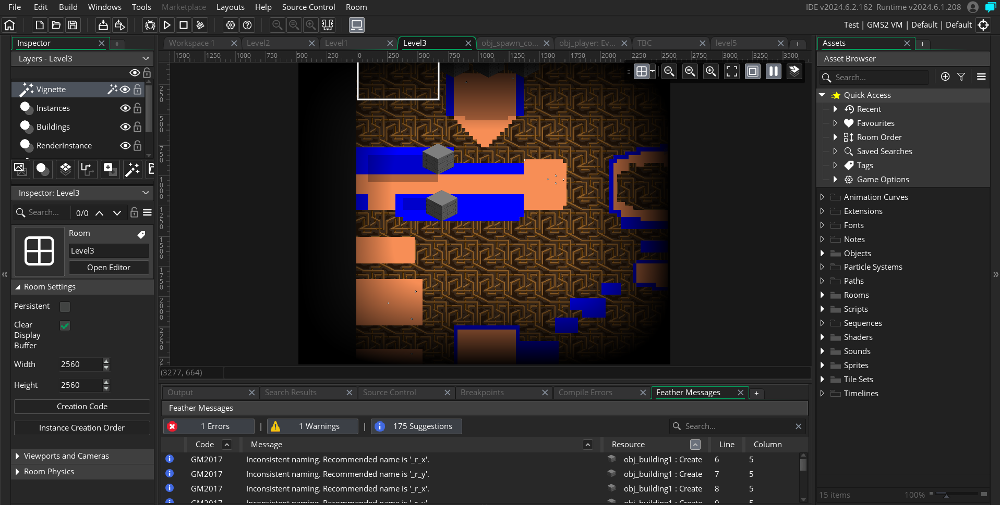
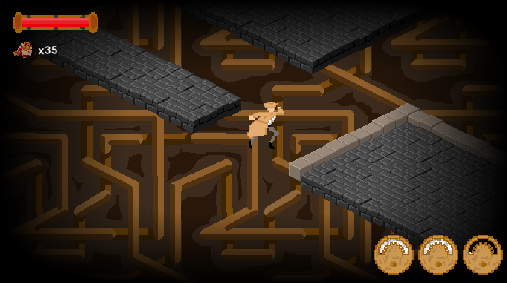

Steampunk

Project Background
Steampunk was the first game I ever worked on. I worked on it in my junior year class of with my teammates Geino Gosey III, Darbis Izaguirre-Acosta, and Lucas de Oliveira.
Game Synopsis

It was an Isometric Dungeon Crawler that followed a character by the name of Ambrose and his crusade against the villianous group of THORN, which he previously used to be a member of before becoming a detective. The game had the player face off against monsters in a short string of levels. In these levels players would need to fight, platform, and vanquish all the enemies in a given room in order to progress.The primary means of fighting against these monsters was Ambrose's sword and gun with resource management having a huge focus thanks to the inclusion of "Scraps" which acted both as ammo for the player but as well as healing when 10 were collected leading the player to make the tough choice between fight or flight.
My Role
My primary role for this project was that of audio engineer. I produced all the sounds that was needed and present within the game as well as the background music. Additionally, I helped developed ideas, concepts(like Ambrose's name and the rose motif present within the story), and even created a level. It was first time working and designing audio in such a way but it something that was so fun to do!


